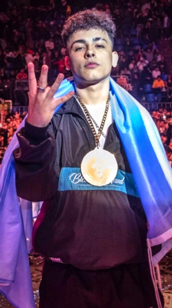

Palacios Corazzina (La Boca; 25 de marzo de 2002) Su nombre artístico es Trueno, es un rapero, cantante y freestyler argentina. Comenzó su carrera en las batallas de freestyle a los catorce años, cuando intentó participar en los torneos porteños A Cara de Perro Zoo Juniors y Red Bull Regional. Al año siguiente, se consagró campeón de la competencia A Cara de Perro Zoo Juniors. Más tarde participó en varios torneos de freestyle, tanto nacionales como internacionales. En 2017, apoyado por el sello discográfico Neuen, comenzó con su carrera musical al lanzar su sencillo debut «K.I.N.G.», y ese mismo año se consagró campeón de la competencia “Cruce de Campeones”. Trueno tomó mucha relevancia al grabar las sesiones «BZRP Freestyle Sessions #6» y «BZRP Music Sessions #16», y tras ganar los torneos Freestyle Master Series de Argentina y la edición argentina de la Batalla de Gallos de Red Bull. Tras su éxito, anunció su retiro de las batallas de freestyle y se centró principalmente en su carrera musical. En 2020 lanzaría su álbum debut de estudio, Atrevido, bajo el sello discográfico Neuen y distribuido por Sony Music Latin.